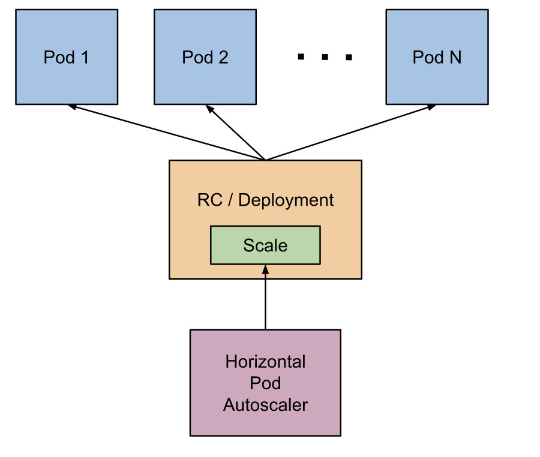
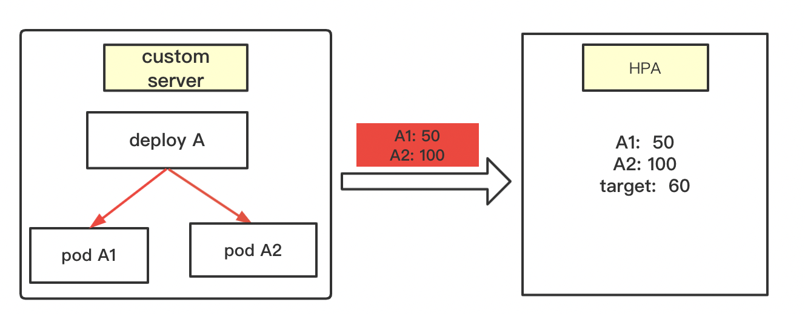
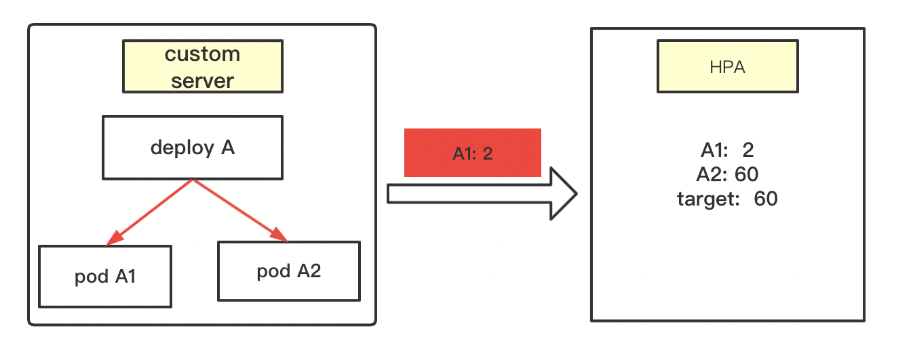

hpa 源码分析
本章重点： 从源码角度分析hpa的计算逻辑
1. hpa介绍
1.1 hpa是什么
hpa指的是 Pod 水平自动扩缩，全名是Horizontal Pod Autoscaler简称HPA。它可以基于 CPU 利用率或其他指标自动扩缩 ReplicationController、Deployment 和 ReplicaSet 中的 Pod 数量。
用处： 用户可以通过设置hpa，实现deploy pod数量的自动扩缩容。比如流量大的时候，pod数量多一些。流量小的时候，Pod数量降下来，避免资源浪费。

1.2 hpa如何用起来
（1）需要一个deploy/svc等，可以参考社区
（2）需要对应的hpa
举例：
(1) 创建1个deploy。这里只有1个副本
apiVersion: apps/v1
kind: Deployment
metadata:
labels:
app: zx-hpa-test
name: zx-hpa
spec:
strategy:
type: RollingUpdate
rollingUpdate:
maxSurge: 1
replicas: 2
selector:
matchLabels:
app: zx-hpa-test
template:
metadata:
labels:
app: zx-hpa-test
name: zx-hpa-test
spec:
terminationGracePeriodSeconds: 5
containers:
- name: busybox
image: busybox:latest
imagePullPolicy: IfNotPresent
command:
- sleep
- "3600"（2）创建对应的hpa。
apiVersion: autoscaling/v2beta1
kind: HorizontalPodAutoscaler
metadata:
name: nginx-hpa-zx-1
annotations:
metric-containerName: zx-hpa
spec:
scaleTargetRef:
apiVersion: apps/v1 // 这里必须指定需要监控那个对象
kind: Deployment
name: zx-hpa
minReplicas: 1 // deploy最小的Pod数量
maxReplicas: 3 // deploy最大的Pod数量
metrics:
- type: Pods
pods:
metricName: pod_cpu_1m
targetAverageValue: 60hpa是从同命名空间下，找对应的deploy。所以yaml中指定deploy的时候不要指定namespaces。这也就要求，hpa 和deploy必须在同一命名空间。
这里我使用的 pod_cpu_1m这个指标。这是一个自定义指标。接下来就是分析
创建好之后，观察hpa，当deploy的cpu利用率变化时，deploy的副本会随之改变。
2. hpa 源码分析
2.1 启动参数介绍
hpa controller随controller manager的初始化而启动，hpa controller将以下flag添加到controller manager的flag中，通过controller manager的CLI端暴露给用户：
// AddFlags adds flags related to HPAController for controller manager to the specified FlagSet.
func (o *HPAControllerOptions) AddFlags(fs *pflag.FlagSet) {
if o == nil {
return
}
fs.DurationVar(&o.HorizontalPodAutoscalerSyncPeriod.Duration, "horizontal-pod-autoscaler-sync-period", o.HorizontalPodAutoscalerSyncPeriod.Duration, "The period for syncing the number of pods in horizontal pod autoscaler.")
fs.DurationVar(&o.HorizontalPodAutoscalerUpscaleForbiddenWindow.Duration, "horizontal-pod-autoscaler-upscale-delay", o.HorizontalPodAutoscalerUpscaleForbiddenWindow.Duration, "The period since last upscale, before another upscale can be performed in horizontal pod autoscaler.")
fs.MarkDeprecated("horizontal-pod-autoscaler-upscale-delay", "This flag is currently no-op and will be deleted.")
fs.DurationVar(&o.HorizontalPodAutoscalerDownscaleStabilizationWindow.Duration, "horizontal-pod-autoscaler-downscale-stabilization", o.HorizontalPodAutoscalerDownscaleStabilizationWindow.Duration, "The period for which autoscaler will look backwards and not scale down below any recommendation it made during that period.")
fs.DurationVar(&o.HorizontalPodAutoscalerDownscaleForbiddenWindow.Duration, "horizontal-pod-autoscaler-downscale-delay", o.HorizontalPodAutoscalerDownscaleForbiddenWindow.Duration, "The period since last downscale, before another downscale can be performed in horizontal pod autoscaler.")
fs.MarkDeprecated("horizontal-pod-autoscaler-downscale-delay", "This flag is currently no-op and will be deleted.")
fs.Float64Var(&o.HorizontalPodAutoscalerTolerance, "horizontal-pod-autoscaler-tolerance", o.HorizontalPodAutoscalerTolerance, "The minimum change (from 1.0) in the desired-to-actual metrics ratio for the horizontal pod autoscaler to consider scaling.")
fs.BoolVar(&o.HorizontalPodAutoscalerUseRESTClients, "horizontal-pod-autoscaler-use-rest-clients", o.HorizontalPodAutoscalerUseRESTClients, "If set to true, causes the horizontal pod autoscaler controller to use REST clients through the kube-aggregator, instead of using the legacy metrics client through the API server proxy. This is required for custom metrics support in the horizontal pod autoscaler.")
fs.DurationVar(&o.HorizontalPodAutoscalerCPUInitializationPeriod.Duration, "horizontal-pod-autoscaler-cpu-initialization-period", o.HorizontalPodAutoscalerCPUInitializationPeriod.Duration, "The period after pod start when CPU samples might be skipped.")
fs.MarkDeprecated("horizontal-pod-autoscaler-use-rest-clients", "Heapster is no longer supported as a source for Horizontal Pod Autoscaler metrics.")
fs.DurationVar(&o.HorizontalPodAutoscalerInitialReadinessDelay.Duration, "horizontal-pod-autoscaler-initial-readiness-delay", o.HorizontalPodAutoscalerInitialReadinessDelay.Duration, "The period after pod start during which readiness changes will be treated as initial readiness.")
}| 参数 | 默认 | 说明 |
|---|---|---|
| horizontal-pod-autoscaler-sync-period | 15s | controller同步HPA信息的同步周期 |
| horizontal-pod-autoscaler-downscale-stabilization | 5m | 缩容稳定窗口，缩容间隔时间（v1.12支持） |
| horizontal-pod-autoscaler-tolerance | 0.1 | 最小缩放容忍度：计算出的期望值和实际值的比率<最小容忍比率，则不进行扩缩容 |
| horizontal-pod-autoscaler-cpu-initialization-period | 5m | pod刚启动时，一定时间内的CPU使用率数据不参与计算。 |
| horizontal-pod-autoscaler-initial-readiness-delay | 30s | 扩容等待pod ready的时间（无法得知pod何时就绪） |
kcm中需要设置这个，才能启动自定义的rest-clients。 –horizontal-pod-autoscaler-use-rest-clients=true
2.2 启动流程
**代码流程： **
startHPAControllerWithMetricsClient -> startHPAControllerWithMetricsClient -> Run -> worker -> processNextWorkItem -> reconcileKey->reconcileAutoscaler
func (a *HorizontalController) reconcileKey(key string) (deleted bool, err error) {
namespace, name, err := cache.SplitMetaNamespaceKey(key)
if err != nil {
return true, err
}
hpa, err := a.hpaLister.HorizontalPodAutoscalers(namespace).Get(name)
if errors.IsNotFound(err) {
klog.Infof("Horizontal Pod Autoscaler %s has been deleted in %s", name, namespace)
delete(a.recommendations, key)
return true, nil
}
return false, a.reconcileAutoscaler(hpa, key)
}2.3 核心计算逻辑
metric的定义类型分为3种，resource、pods和external，这里只分析pods类型的metric。
reconcileAutoscaler函数就是hpa的核心函数。该函数主要逻辑如下：
- 1.做一些类型转换，用于接下来的Hpa计算
- 2.计算hpa 的期望副本数量。
3.根据计算的结果判断是否需要改变副本数，需要改变的话，调用接口修改，然后做错误处理。
1 2 3 4 5 6 7 8 9 10 11 12 13 14 15 16 17 18 19 20 21 22 23 24 25 26 27 28 29 30 31 32 33 34 35 36 37 38 39 40 41 42 43 44 45 46 47 48 49 50 51 52 53 54 55 56 57 58 59 60 61 62 63 64 65 66 67 68 69 70 71 72 73 74 75 76 77 78 79 80 81 82 83 84func (a *HorizontalController) reconcileAutoscaler(hpav1Shared *autoscalingv1.HorizontalPodAutoscaler, key string) error { // 1. 调用client向apiserver发送请求，scale是返回的hpa实体,然后做各种数据类型转换，然后通过一个client向apiserver获取scale，以及当然还有一些backup、把错误写入hpa event的操作 。。。。代码省略 // 2. 判断是否需要计算副本数，如果需要，就调用computeReplicasForMetrics函数计算当前hpa的副本数。 desiredReplicas := int32(0) rescaleReason := "" var minReplicas int32 if hpa.Spec.MinReplicas != nil { minReplicas = *hpa.Spec.MinReplicas } else { // Default value minReplicas = 1 } rescale := true if scale.Spec.Replicas == 0 && minReplicas != 0 { // Autoscaling is disabled for this resource desiredReplicas = 0 rescale = false setCondition(hpa, autoscalingv2.ScalingActive, v1.ConditionFalse, "ScalingDisabled", "scaling is disabled since the replica count of the target is zero") } else if currentReplicas > hpa.Spec.MaxReplicas { rescaleReason = "Current number of replicas above Spec.MaxReplicas" desiredReplicas = hpa.Spec.MaxReplicas } else if currentReplicas < minReplicas { rescaleReason = "Current number of replicas below Spec.MinReplicas" desiredReplicas = minReplicas } else { var metricTimestamp time.Time metricDesiredReplicas, metricName, metricStatuses, metricTimestamp, err = a.computeReplicasForMetrics(hpa, scale, hpa.Spec.Metrics) if err != nil { a.setCurrentReplicasInStatus(hpa, currentReplicas) if err := a.updateStatusIfNeeded(hpaStatusOriginal, hpa); err != nil { utilruntime.HandleError(err) } a.eventRecorder.Event(hpa, v1.EventTypeWarning, "FailedComputeMetricsReplicas", err.Error()) return fmt.Errorf("failed to compute desired number of replicas based on listed metrics for %s: %v", reference, err) } klog.V(4).Infof("proposing %v desired replicas (based on %s from %s) for %s", metricDesiredReplicas, metricName, metricTimestamp, reference) rescaleMetric := "" if metricDesiredReplicas > desiredReplicas { desiredReplicas = metricDesiredReplicas rescaleMetric = metricName } if desiredReplicas > currentReplicas { rescaleReason = fmt.Sprintf("%s above target", rescaleMetric) } if desiredReplicas < currentReplicas { rescaleReason = "All metrics below target" } desiredReplicas = a.normalizeDesiredReplicas(hpa, key, currentReplicas, desiredReplicas, minReplicas) rescale = desiredReplicas != currentReplicas } // 3.进行扩缩容，并进行错误处理。 if rescale { scale.Spec.Replicas = desiredReplicas _, err = a.scaleNamespacer.Scales(hpa.Namespace).Update(targetGR, scale) if err != nil { a.eventRecorder.Eventf(hpa, v1.EventTypeWarning, "FailedRescale", "New size: %d; reason: %s; error: %v", desiredReplicas, rescaleReason, err.Error()) setCondition(hpa, autoscalingv2.AbleToScale, v1.ConditionFalse, "FailedUpdateScale", "the HPA controller was unable to update the target scale: %v", err) a.setCurrentReplicasInStatus(hpa, currentReplicas) if err := a.updateStatusIfNeeded(hpaStatusOriginal, hpa); err != nil { utilruntime.HandleError(err) } return fmt.Errorf("failed to rescale %s: %v", reference, err) } setCondition(hpa, autoscalingv2.AbleToScale, v1.ConditionTrue, "SucceededRescale", "the HPA controller was able to update the target scale to %d", desiredReplicas) a.eventRecorder.Eventf(hpa, v1.EventTypeNormal, "SuccessfulRescale", "New size: %d; reason: %s", desiredReplicas, rescaleReason) klog.Infof("Successful rescale of %s, old size: %d, new size: %d, reason: %s", hpa.Name, currentReplicas, desiredReplicas, rescaleReason) } else { klog.V(4).Infof("decided not to scale %s to %v (last scale time was %s)", reference, desiredReplicas, hpa.Status.LastScaleTime) desiredReplicas = currentReplicas } a.setStatus(hpa, currentReplicas, desiredReplicas, metricStatuses, rescale) return a.updateStatusIfNeeded(hpaStatusOriginal, hpa) }
这里主要关心第二个步骤：hpa如何计算期望副本数量
2.4 计算期望副本数量
概念：
最小值：minReplicas。 这个是用户在hpa里面的yaml设置的。这个是可选的，如果不设置，默认是1。
最大值：MaxReplicas。 这个是用户在hpa里面的yaml设置的。这个必填的，如果不设置，会报错, 如下。
当前值：currentReplicas。这个是hpa获得的当前deploy的副本数量。
期望值：desiredReplicas。 这个是hpa希望deploy的副本数量。
error: error validating "nginx-deployment-hpa-test.yaml": error validating data: ValidationError(HorizontalPodAutoscaler.spec): missing required field "maxReplicas" in io.k8s.api.autoscaling.v2beta1.HorizontalPodAutoscalerSpec; if you choose to ignore these errors, turn validation off with --validate=false计算逻辑分为两部分，第一种情况是不需要算，就可以直接得出期望值。 第二种情况需要调用函数计算。
情况1：不需要计算
（1）当前值等于0。 期望值=0. 不扩容，
（2）当前值 > 最大值。 没必要计算期望值。 期望值=最大值，需要扩缩容。
（3）当前值 < 最小值。 没必要计算期望值。 期望值=最小值，需要扩缩容。
情况2： 最小值 <= 当前值 <= 最大值。 需要调用函数计算 期望值。
这里的调用链为 computeReplicasForMetrics -> computeReplicasForMetric -> GetMetricReplicas
这里computeReplicasForMetrics有一个需要注意的点就是。这里可以处理了多个metric的情况。例如：这里一个hpa有多个指标。
|
|
这里hpa的逻辑是，谁最大取谁。例如, 通过cpu.Utilization hpa算出来应该需要 4个pod。 但是packets-per-second算出来需要5个。这个时候就已5个为准。见下面代码：
// computeReplicasForMetrics computes the desired number of replicas for the metric specifications listed in the HPA,
// returning the maximum of the computed replica counts, a description of the associated metric, and the statuses of
// all metrics computed.
func (a *HorizontalController) computeReplicasForMetrics(hpa *autoscalingv2.HorizontalPodAutoscaler, scale *autoscalingv1.Scale,
metricSpecs []autoscalingv2.MetricSpec) (replicas int32, metric string, statuses []autoscalingv2.MetricStatus, timestamp time.Time, err error) {
for i, metricSpec := range metricSpecs {
replicaCountProposal, metricNameProposal, timestampProposal, condition, err := a.computeReplicasForMetric(hpa, metricSpec, specReplicas, statusReplicas, selector, &statuses[i])
if err != nil {
if invalidMetricsCount <= 0 {
invalidMetricCondition = condition
invalidMetricError = err
}
invalidMetricsCount++
}
if err == nil && (replicas == 0 || replicaCountProposal > replicas) {
timestamp = timestampProposal
replicas = replicaCountProposal
metric = metricNameProposal
}
}
// If all metrics are invalid return error and set condition on hpa based on first invalid metric.
if invalidMetricsCount >= len(metricSpecs) {
setCondition(hpa, invalidMetricCondition.Type, invalidMetricCondition.Status, invalidMetricCondition.Reason, invalidMetricCondition.Message)
return 0, "", statuses, time.Time{}, fmt.Errorf("invalid metrics (%v invalid out of %v), first error is: %v", invalidMetricsCount, len(metricSpecs), invalidMetricError)
}
setCondition(hpa, autoscalingv2.ScalingActive, v1.ConditionTrue, "ValidMetricFound", "the HPA was able to successfully calculate a replica count from %s", metric)
return replicas, metric, statuses, timestamp, nil
}针对具体某个metric指标。计算分为俩步：
（1）GetRawMetric函数： 得到 具体的metric值
（2）calcPlainMetricReplicas ：计算期望副本值
这里需要注意一点就是targetUtilization进行了数据转换。乘以了10^3。
// GetMetricReplicas calculates the desired replica count based on a target metric utilization
// (as a milli-value) for pods matching the given selector in the given namespace, and the
// current replica count
func (c *ReplicaCalculator) GetMetricReplicas(currentReplicas int32, targetUtilization int64, metricName string, namespace string, selector labels.Selector, metricSelector labels.Selector) (replicaCount int32, utilization int64, timestamp time.Time, err error) {
metrics, timestamp, err := c.metricsClient.GetRawMetric(metricName, namespace, selector, metricSelector)
if err != nil {
return 0, 0, time.Time{}, fmt.Errorf("unable to get metric %s: %v", metricName, err)
}
replicaCount, utilization, err = c.calcPlainMetricReplicas(metrics, currentReplicas, targetUtilization, namespace, selector, v1.ResourceName(""))
return replicaCount, utilization, timestamp, err
}2.4.1 GetRawMetric-具体的metric值
// GetRawMetric gets the given metric (and an associated oldest timestamp)
// for all pods matching the specified selector in the given namespace
func (c *customMetricsClient) GetRawMetric(metricName string, namespace string, selector labels.Selector, metricSelector labels.Selector) (PodMetricsInfo, time.Time, error) {
// 1.这里直接调用 GetForObjects，发送restful请求获取数据
metrics, err := c.client.NamespacedMetrics(namespace).GetForObjects(schema.GroupKind{Kind: "Pod"}, selector, metricName, metricSelector)
if err != nil {
return nil, time.Time{}, fmt.Errorf("unable to fetch metrics from custom metrics API: %v", err)
}
if len(metrics.Items) == 0 {
return nil, time.Time{}, fmt.Errorf("no metrics returned from custom metrics API")
}
// 2. 对获取的数据进行处理。这里看起来是乘以了 10^3
res := make(PodMetricsInfo, len(metrics.Items))
for _, m := range metrics.Items {
window := metricServerDefaultMetricWindow
if m.WindowSeconds != nil {
window = time.Duration(*m.WindowSeconds) * time.Second
}
res[m.DescribedObject.Name] = PodMetric{
Timestamp: m.Timestamp.Time,
Window: window,
Value: int64(m.Value.MilliValue()),
}
m.Value.MilliValue()
}
timestamp := metrics.Items[0].Timestamp.Time
return res, timestamp, nil
}2.4.2 calcPlainMetricReplicas-计算期望副本值
这里代码省略，直接贴逻辑。
3.1 先从apiserver端拿到所有相关的pod，将这些pod分为三类：
a.missingPods用于记录处于running状态，但不提供该metric的pod
b.ignoredPods 用于处理resource类型cpu相关metric的延迟（就是pod未就绪），这里不深入讨论
c.readyPodCount记录状态为running，且能提供该metric的pod3.2 调用GetMetricUtilizationRatio计算实际值与期望值的对比情况。计算时，对于所有可获取到metric的pod，取它们metric value的平均值得到：usageRatio=实际值/期望值；utilization=实际值（平均）
3.3 计算期望pod数量DesiredReplicas。对于missingPods为0，即所有target pod都处于running可获取metric value的情况:
a.如果实际值与期望值的对比usageRatio处于可容忍范围内，不执行scale操作。默认情况下c.tolerance=0.1，即usageRatio处于
[0.9,1.1]时pod数量不变化
if math.Abs(1.0-usageRatio) <= c.tolerance {
// return the current replicas if the change would be too small
return currentReplicas, utilization, nil
}b.实际值与期望值的对比usageRatio不在可容忍范围内，向上取整得到desiredReplicas
return int32(math.Ceil(usageRatio * float64(readyPodCount))), utilization, nil
对于missingPods>0，即有target pod的metric value没有获取到的情况。 缩容时，对于找不到metric的pod，视为正好用了desired value
if usageRatio < 1.0 {
// on a scale-down, treat missing pods as using 100% of the resource request
for podName := range missingPods {
metrics[podName] = metricsclient.PodMetric{Value: targetUtilization}
}
} 扩容时，对于找不到metric的pod，视为该pod对指定metric的使用量为0
for podName := range missingPods {
metrics[podName] = metricsclient.PodMetric{Value: 0}
}经过上面的处理后，重新计算实际值与期望值的对比newUsageRatio。
在下面两种情况下，不执行scale操作：新的实际值与期望值的对比newUsageRatio在容忍范围内； 赋值处理前后，一个需要scale up，另一个需要scale down。
其它情况下，同样地执行向上取整操作
if math.Abs(1.0-newUsageRatio) <= c.tolerance || (usageRatio < 1.0 && newUsageRatio > 1.0) || (usageRatio > 1.0 && newUsageRatio < 1.0) {
// return the current replicas if the change would be too small,
// or if the new usage ratio would cause a change in scale direction
return currentReplicas, utilization, nil
}
return int32(math.Ceil(newUsageRatio * float64(len(metrics)))), utilization, nil最后，Hpa将desiredReplicas写到scale.Spec.Replicas，调用a.scaleNamespacer.Scales(hpa.Namespace).Update(targetGR, scale)向apiserver发送更新hpa的请求，对某个hpa的一轮更新操作就完成了。
3. 举例说明计算过程
3.1 hpa扩容计算逻辑
关键概念：tolerance（hpa扩容容忍度）， 默认为0.1。
Custom server: 自定义metric服务。这里是一个抽象，用于给hpa提供具体的metric值。Custom server具体可以是prometheus，或者其他的监控系统。下一篇文章会讲如何将Custom server和hpa联系起来。
3.2 场景1
当前有deployA, 运行着俩个pod, A1和A2。 deploy设置了hpa，指标是内存使用量，并且规定，当平均使用量大于60就要扩容。

hpa扩容计算步骤：
第一步: 往monitor-adaptor发送请求， 要求获得deployA下所有pod的metric值。 这里收到了 A1=50; A2=100
第二步: 补全metric值，给获取不到metric值的pod赋值。 这里hpa会查看集群状态，发现deployA 下有俩个pod，A1,A2。并且这两个pod的metric值都获取到了。 这个时候就不用补全。（下面例子就介绍需要补全metric的情况）
第三步: 开始计算
（1）计算 平均pod metric值和 target的比例。也可以叫扩容比例系数
ratio = (A1+A2)/(2*target) = (50+100)/120 = 1.25按理说不用再除target值，直接（50+100)/2=75，然后拿75和60比就行。 75比60大就应该扩容。
这里使用系数表示主要有俩个原因：
- 有容忍度的概念，使用比例方便和计算是否超出了容忍度
- 用于扩缩容计算
（2）判断是否超过容忍度
这里 1.25-1 > 0.1(默认容忍度)。 因此这种情况是需要扩容的。
这里就体现了容忍度的作用。有了容忍度, 平均metric需要大于 66才会扩容（60*1.1）
（3）计算真正的副本数量
向上取整： 扩容比例系数*当前的副本数
这里就是： 1.25*2 = 2.5 , 取整后就是3。
3.3 场景2
和场景1不同在于：由于某件原因，导致 monitor-adaptor往hpa发送的时候，只有 A1=20。 A2的数据丢失。
hpa扩容计算步骤：
第一步: 往monitor-adaptor发送请求， 要求获得deployA下所有pod的metric值。 这里收到了 A1=2;
第二步: 补全metric值，给获取不到metric值的pod赋值。 这里hpa会查看集群状态，发现deployA 下有俩个pod，A1,A2。但是这里发现只有A1的值，这个时候hpa就认为A2 有数据，但是获取失败。所以就会给A2自己赋值， 0/target。
赋值逻辑如下： 当 A1 > target的时候，A2=0; 当A1<= target的时候，赋值为 target。
这里由于 A1=2, 比target(60)小，所以最终hpa计算时:
A1=2; A2=60; target=60;
第三步: 开始计算
（1）计算 平均pod metric值和 target的比例。也可以叫扩容比例系数
ratio = (A1+A2)/(2*target) = (2+60)/120 = 0.517（2）判断是否超过容忍度
这里 1-0.517 > 0.1(默认容忍度)。 因此这种情况是需要缩容的。
（3）计算真正的副本数量
向上取整： 扩容比例系数*当前的副本数（这里就是metric数量，A1,A2）
对应就是： 0.517*2 = 1.034 , 取整后就是2。
4. 总结
（1）hpa可以设置多个metric。当有多个metric时，谁算出来的副本值最大，取谁的值
（2）针对具体的metric而言（这里是以pods这种为例），首先获得用户定义的hpa指标。比如最大值，最小值，阈值等。
这里有一个点在于。阈值乘以了1000用于计算。
（3）获取metric的值，这里是使用了自定义rest服务。hpa只要发送rest请求，就有数据。这种情况非常适用于公司使用自己的监控数据做扩缩容。 注意：这里每个值也乘以了1000。这样和阈值就是相互抵消了。
（4）利用公式计算期望值。 期望值*X <= 当前pod所有的metric值。X取小的正整数。具体逻辑可以看上文的计算过程。